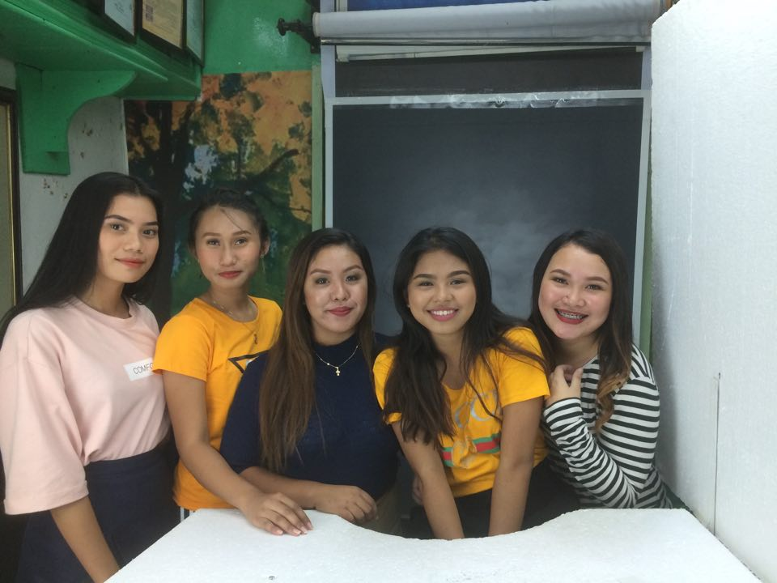
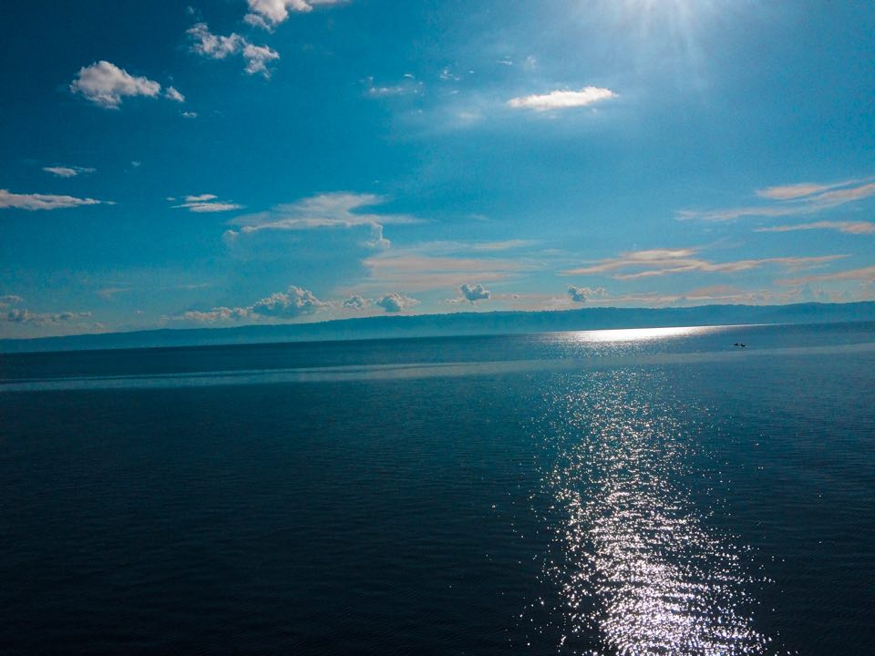
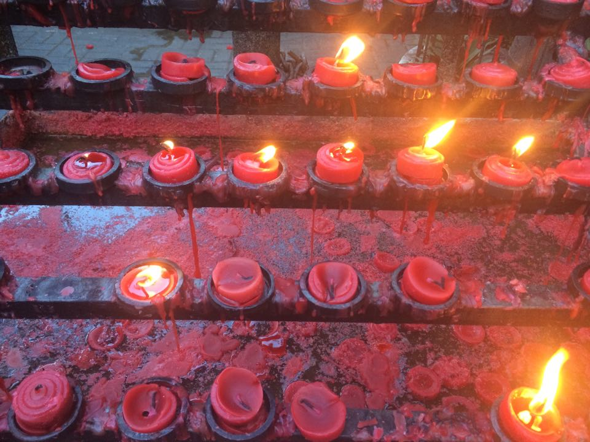
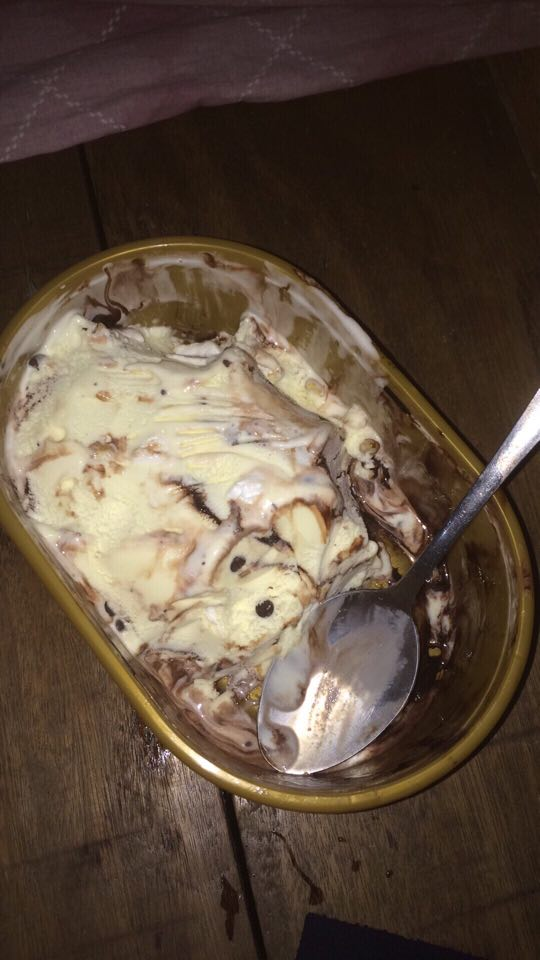
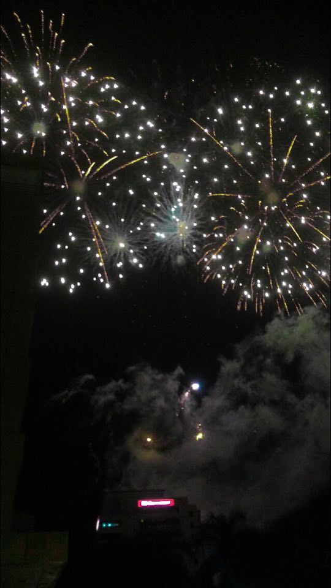

Napangilikan — Larawan

Clouds
Isinulat ni KimmyCabs
0 1 0
Clouds. It was taken that photo in isla de fuego. Which known as siquijor. Siquijor is only a province and it is just a small island. And we are going there when its vacation. I didn't expect the clouds that having a nice and unique formation. And beside clouds are magical. when it comes to forms and colors. Sky is blue brings the sunshine in your face. It has different forms....

Christmass Lights
Isinulat ni KimmyCabs
0 1 0
It was taken last year. At the Mandaue plaza. The day where people enjoying the the christmas eve. I was like to take that photo. Because the lights are simple and beautiful. There are darknesses in life and there are lights, and you are one of the lights, the light of all lights....





